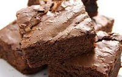
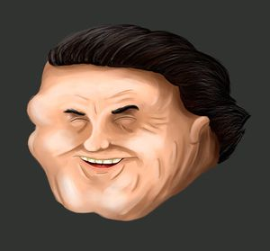

Brony
 De: La Frikipedia, la enciclopedia extremadamente seria.
De: La Frikipedia, la enciclopedia extremadamente seria.

|
¡LISTA!
Este artículo o sección no es más que una torpe lista. Si crees que vale la pena, edítalo para que tenga párrafos y esas cosas.
|
| De la serie enfermedades y padecimientos:
|
| Brony
|
| 
|
| Brony normal en su día a día.
|
|
| Nombre común
|
Fanaticos de MLP
|
| Clase
|
Peligrosa.
|
| Afecta a
|
Todas.
|
| Número de enfermos
|

|
| Pruebas clínicas
|
Se desconocen.
|
| Extendida en
|
Casi todo el mundo.
|
| Diagnosis (síntomas)
|
Dibujar ponys sin cesar.
|
| Tratamiento
|
Ver series de macho.
|
| Prognosis (expectativas)
|
Zoofilia.
|
| ¿Contagiosa?
|
Execivamente.
|
| Dieta
|
|
| Caso famoso
|
Tu
|
Los brownies (también conocido como La Secta de los Caballos) son una secta del internet que se conforma por toda persona que disfruta de la caricatura infantil mas Zoofílica y gay de nuestros dias: mi pequeña especie de equino: la amistad es brujería sobrenatural; una caricatura infantil llena de mulas , el 97% hembras que son ya sea lesbianas, adictas al crack, a la heronia, al ecstasis, a los sombreros gigantes, gitanas, brujas, etc. y todo con ecsexo. Ademas, son otra forma de Dominar el Mundo, o al menos eso creen la mayoría de sus integrantes
Origen
Se remonta al famoso "imageboard" 4chan (Sí, esta pagina para perturbados. Cydrex, ejem ejem) cuando alguna revista de internet se le ocurra poner un titulo tó dramático al artículo que hablaría de la caricatura infantil Mai Litel Mula Friechips Is Shit que captó la atención de varios usuarios Gay del "board" /co/ (comics y caritcaturas).
Al principio, todo era "trololololol veo my little mula lidien con ello". Pero todo cambió,cuando algún zoofilico de closet (en 4chan está de moda odiar a los zoofilicos homosexuales sin razón aparente) mostró verdadero interés sexual en la caricatura infantil y esparció su "amor" por esta entre los usuarios tan rápido como el SIDA en los esprin breik en Floridacreando así una de los más notables casos de audiencia accidental. Al poco tiempo, esta obsesión por caballitos de colores animados se esparció mas allá de 4chan a toda la interné y en distintos idiomas para alimentar a los frikis en nuestra incansable búsqueda de hacer cosas cada vez mas y mas raras.
El fanatismo no tardó mas de 2 minutos en llegar a /b/ donde se acuño el termino Brony como combinación de las iniciales de Babosos, Ridiculos. Ofensivos, Ninfomanos, Imbeciles, Estúpidos, Subnormales , entendieron, yo no.
Sintomas de ser Brownies
- Combertir a las mujeres en ponis (enserio , créeme , algunos son asi).
- Fantasias sexuales y/o sueños humedos con mulas
- Perdida de la Realidad con la Ficcion.
- Rechazos sociales por tus amigos , compañeros de la escuela , incluso familiares (si es que son homofobicos).
- Bullying en algunos casos.
- Caer fatal a un tal Homero Pérez Gómez un anti-bronies que comenta videos de Youtube.
- Rechazos sociales por algunos amigos bronies que no les pintan sus mulaficaciones por no saber estos Dibujar.
- Zoofilia.
- Cuando te clopeas hasta con las mulitas y otros mulas de corta edad: Pedofilia.
- Mas que todo zoofilia.
- ¿ Olvide mencionar la zoofilia ?
- Ah , creo que no , pero por si acaso : Zoofilia.
- -20% de probabilidad de tener novia excepto que esta sea pegar-sisters.
- Las Pegar-sister son las tias mas Feacas del Ciberuniverso.
- Y como ultimo aviso : Zoofilia.
- Aniquilar a Homero Pérez Gómez.
- La Asignatura de Naturales es mas divertida Los Pegasos hacen que el Agua pase de Liquido a Gaseoso y luego Hace que llueva en las Laderas
- La tierra no gira al Rededor del Sol, es PSOE quien lo hace Salir y Meter, quien diga lo contrario sera Ejecutado por Blasfemo.
- Odiar a cualquier ser que no vea MLP.
- Odiar a cualquier serie que no sea MLP y por eso hace crossovers.
- Estar en Contra de Marrano Rajoy por esta en Contra de estos Dibujos ya que Fomentan la ZOOFILIA ,ZOOFILIA ,MAS ZOOFILIA (si es que pensaste que esta serie enseñaba valores ,respeto,etc ,demasiado tarde eres bronie).
- Ser clopper y para mas colmo ... Horserfucker.
- Odiar al youtuber D4rkbr4ckter
- Gak gak gak.
- Autismo ( cuando este empeora su obsesión).
- Odiar a los granjeros
- Y para acabarla : Escenas de desnudos :D (las mulas siempre andan desnudas , genio) ... nah mentira : Zoofilia
Bronies famosos
 Feis, el brony más famosos del mundo
- Stephen Colbert (dirige un noticiero gringo, es brony aunque no tiene idea de que significa eso)*el que hace la vos del wey de Mass Effect
- Notch (creador de minecraft)
- Eminem
- Bill Clinton (ex presidente de gringolandia)
- Lady Gaga
estamos jodidos
- los que hacen sea caricatura infantil
- los de "hot in mule"
- yo
- el ser que odia acrapuscúlo mas que nadie (Robert Pattinson)
- Weird Al Yankovic
- Vermin supreme (candidato presidencial de gringolandia, quiere regalar un poni a cada americano)
- Gabe Newell (si, el
gordo de Valve)
- Seth Green (el de Naughty Dog)
- Jacob Minkoff (otro más, fiesta!)
- Tara Strong dobladora de unas cuantas voces de MLP:FiM (pikipi)
- Se dice que Bush también es brony
- Deadmau5 fue visto en un concierto con una camiseta de MLP , pero despues de todo resulto ser una broma para ver cuantos fans decepcionaba , asi que a final de cuentas , no cuenta como brony (o probablemente si lo sea
Aunque su musica (¿Hace musica?) me importa una mierda , asi que me da igual ) .
- Lauren Faust creadora de la caricatura infantil.
- Andrew W.K (un dia dijo que se considera brony).
- El rapero MC chris
- Dr. Evil (ya quisieras).
- Maggie Vera , la que hace la voz de apella en español latino.
- Jack Black
Autor(es):
- Krusher
- Fordus
- Master sporechief
- Altairgame
- AfterBirth
- Shnitzel
- Vladimir Soriano Galarza
- TodomelasudaxD
- Dante.apple.9
- MawerGotico
Frikipedia 2005-2016, Licencia
GFDL 1.2 - Extraído por FrikiLeaks